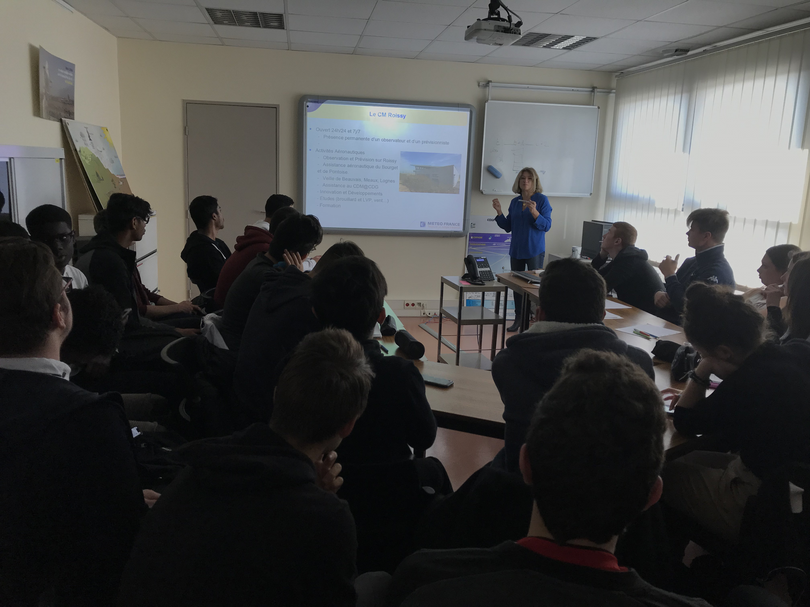

Formations extérieures au lycée
La coopération de l’école avec les branches professionnelles se renforce dans le cadre des missions générales d’information sur les métiers et des actions conduites dans le domaine de la formation professionnelle et de l’insertion des jeunes.
Ainsi, les activités aéronautiques scolaires ouvrent des perspectives d’orientation vers plus de 150 métiers intéressant les divers secteurs :
Compagnies aériennes et sociétés de travail aérien
Industries de construction cellule, moteurs et équipements de bord
Ateliers et industrie de la maintenance et du contrôle technique
Services et organismes d’exploitation et de la circulation aérienne
Installations aéroportuaires
Services administratifs
Armées
